방송통신기사 (2010-03-14 기출문제)
1과목: 디지털 전자회로
1. 어떤 정류회로의 맥동율이 1[%]인 정류회로의 출력 직류전압이 400[V]일 때, 이 회로의 리플 전압은 얼마인가?
- 4[V]
- 40[V]
- 20[V]
- 2[V]
(정답률: 56%)

2. 그림과 같은 평활회로에서 출력 맥동율을 최소화하기 위한 방법으로 옳지 않은 것은?
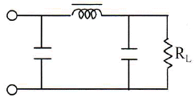
- 정류파형의 주파수를 높인다.
- L값을 크게 한다.
- C값을 크게 한다.
- RL값을 작게 한다.
(정답률: 56%)
3. 다음 같은 정전압 회로에서 입력전압 VIN이 15[V] ~ 18[V]의범위로 변동하는 경우 제너다이오드 전류 ID의 변화는 얼마인가? (단, RL=1[kΩ], VL=10[V]이다.)
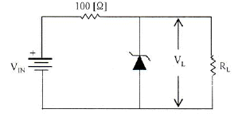
- 30~60[mA]
- 40~60[mA]
- 30~70[mA]
- 40~70[mA]
(정답률: 46%)
4. 다음은 궤환율이 0.04인 부궤환 증폭기 회로이다. 저항 Rf는?
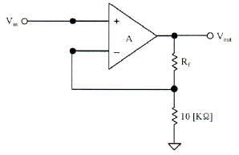
- 200[kΩ]
- 20[kΩ]
- 24[kΩ]
- 240[kΩ]
(정답률: 55%)
5. 차동증폭기의 동상신호제거비(common-mode rejection ratio)에 관한 설명으로 옳지 않은 것은?
- 동상신호제거비가 작을수록 간섭신호 제거 특성이 좋다.
- 개루프 전압이득이 100,000이고 공통-모드 이득이 0.2인 연산증폭기의 공통신호제거비는 500,000이다.
- 동상신호제거비는 동상신호를 제거할 수 있는 성능척도이다.
- 입력 동상신호에 대한 오차를 나타내는 성능척도이다.
(정답률: 42%)
6. 이상적인 연산증폭기의 특성으로 옳은 것은?(오류 신고가 접수된 문제입니다. 반드시 정답과 해설을 확인하시기 바랍니다.)
- 전압이득은 무한대이다.
- 입력저항은 무한대이다.
- 출력저항은 영(zero)이다.
- 이득과 대역폭 곱은 무한대이다.
(정답률: 37%)
7. 전력증폭회로의 동작등급에서 가장 선형적인 동작이 가능한 것은?
- A급
- AB급
- B급
- C급
(정답률: 61%)
8. 발진회로의 궤환루프의 감쇠가 0.5인 경우 발진을 유지하기 위한 증폭회로의 전압이득은?
- 전압이득은 2.0이어야 한다.
- 전압이득은 0.5이어야 한다.
- 전압이득은 1.0이어야 한다.
- 전압이득은 0.5보다 작아야 한다.
(정답률: 53%)
9. 그림은 윈-브릿지(Wein-bridge) 발진회로이다. 궤환루프의 저항이 감소할 경우 발진주파수의 변화는?
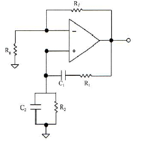
- 증가한다.
- 감소한다.
- 변화없다.
- 발진이 되지 않는다.
(정답률: 62%)
10. 정보 전송 기술에서 다음의 그림은 어떤 변조 방식의 피변조파인가?
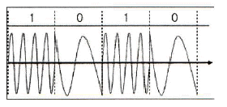
- 진폭 천이 변조
- 주파수 천이 변조
- 폭 천이 변조
- 위상 천이 변조
(정답률: 60%)
11. 정보 전송의 변복조 기술에서 반복 주기가 일정한 펄스의 시간폭을 신호파의 진폭에 대응하여 변화시키는 방식은?
- PCM
- PPM
- PWM
- PAM
(정답률: 60%)
12. 펄스 반복 주파수 500[Hz], 펄스폭 10[μs]인 pulse의 첪격 계수(율) D는?
- 0.001
- 0.0001
- 0.0⑤
- 0.00⑤
(정답률: 47%)
13. 다음 중 (+) 피드백(feedback)을 이용하는 펄스회로는?
- 슈미트 트리거
- 계단파 발생기
- 톱니파 발생기
- 단안정 멀티바이브레이터
(정답률: 51%)
14. 3초과 코드(excess-3 code)는 어떻게 구성하는가?
- 교정 해밍코드
- 검출코드
- 8421코드에 3을 더한 코드
- 8421코드에 1의 보수를 더한 코드
(정답률: 63%)
15. 다음 회로에서 출력 X에 대한 부울식은?
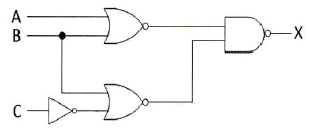
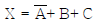
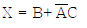
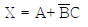
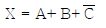
(정답률: 43%)
16. JK-FlipFlop에서 J=0, K=1일 때 클럭 펄스가 인가될 때 Qn+1의 출력 상태는? (단, 플립플롭의 setup time과 holding time은 만족한다고 가정함)
- 반전
- 0
- 1
- 부정
(정답률: 42%)
17. 8[MHz] 구형파를 카운터의 입력으로 인가할 때, 250[kHz]를 얻기 위해 필요한 카운터의 비트수 얼마인가?
- 2비트
- 3비트
- 5비트
- 4비트
(정답률: 38%)
18. 디지털 논리 소자에서 회로 동작을 손상시키지 않은면서 출력에 연결할 수 있는 동일한 논리 게이트의 수를 무엇이라고 하는가?
- Settling
- Fan-Out
- Hold
- Setup
(정답률: 58%)
19. 반감산기에서 차를 얻기 위하여 사용되는 게이트는?
- 배타적 OR
- AND 게이트
- NOR 게이트
- OR 게이트
(정답률: 40%)
20. 그림을 1비트 2진 비교기(comparator)로 사용하고자 한다. 출력 f는 다음 중 어느 경우를 나타내는가?
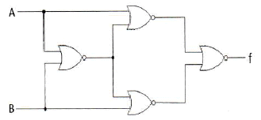
- A=B
- A>B
- A<B
- 사용할 수 없다.
(정답률: 59%)
2과목: 방송통신 기기
21. 텔레비전 방송 제작 중 연주소에서 하는 역할 중 틀린 것은?
- 프로그램 제작
- 제작된 프로그램을 송신소로 송출
- 제작된 프로그램을 방송위성국으로 송출
- 제작된 프로그램을 일반 수신자에게 송출
(정답률: 70%)
22. 다음 중 비디오 조명의 조건과 관계가 없는 것은?
- 밝기가 첪분할 것
- 플리커(flicker)가 없을 것
- 조명의 효율이 좋을 것
- 발열이 첪분할 것
(정답률: 65%)
23. 다음 중 방송국의 부조정실 기기 구성품이 아닌 것은?
- 편집기
- 자동송출장비
- CCU, VCR, CG
- 파형측정기, 믹서
(정답률: 78%)
24. 다음 중 FM 신호의 복조기가 아닌 것은?
- 포락선 검파기
- 직교형 검파기
- 경사형 변별기
- 비(Ratio) 검파기
(정답률: 60%)
25. 다음 중 슈퍼헤테로다인 수신기의 장점이 아닌것은?
- 감도가 좋다.
- 선택도가 좋다.
- 첪실도가 좋다.
- 조정이 쉽다.
(정답률: 68%)
26. AM 방송에 관한 설명 중 옳은 것은?
- 중파 대역의 지표파로 전파 도달거리가 짧다.
- 송신용 안테나로 파라볼라 안테나를 사용한다.
- 레벨변동의 영향을 받지 않는다.
- 변복조 회로 설계가 비교적 간단하다.
(정답률: 52%)
27. 다음 중 NTSC 컬러 TV 방식에서 수평동기 주파수는?
- 약 75.350[kHz]
- 약 35.734[kHz]
- 약 15.734[kHz]
- 약 75.350[kHz]
(정답률: 78%)
28. 다음 중 NTSC 컬러 TV의 변조 방식으로 맞는 것은?
- 영상신호 : FM, 음성신호 : AM
- 영상신호 : AM, 음성신호 : FM
- 영상신호 : PM, 음성신호 : FM
- 영상신호 : FM, 음성신호 : PM
(정답률: 85%)
29. 다음 중 UHF 송신안테나가 아닌 것은?
- 루프 안테나
- 파라볼라 안테나
- 야기(Yagi) 안테나
- 다이폴(Dipole) 안테나
(정답률: 37%)
30. 다음 중 위성방송을 위한 디지털 변조 방식으로 가장 적합한 것은?
- ASK
- FSM
- QPSK
- VSB
(정답률: 84%)
31. 다음 위성 안테나 중 타원체의 반사면을 이용하여 두 번 반사시켜 신호를 초점에 모아주는 방식의 안테나는?
- 접시형 안테나
- 카세그레인(Cassegrain) 안테나
- 그레고리안(Gregorian) 안테나
- 평면 안테나
(정답률: 59%)
32. MPEG2 video에서는 3가지 형태의 Frame이 있다. 이 3가지 형태의 Frame은 각각 무엇인가?
- A, B, C
- Y, I, Q
- B, R, Y
- I, B, P
(정답률: 78%)
33. 다음 보기 중에서 9단(stage)의 시프트 레지스터를 이용하여 13.5[MHz] 샘플링, 10비트 양자화의 컴포넌트 영상신호의 전송에 적용되는 SMPTE-295M에서 전송로의 극성을 없애기 위해서 스크램블 출력에 NRZ 신호에 대신 사용하는 선로 부호 방식은?
- RZ
- NRZ Bipolar
- NRZ Unipolar
- NRZI
(정답률: 66%)
34. 다음 중 디지털 방송의 영상압축 표준규격으로 맞는 것은?
- JPEG
- MPEG
- TIFF
- AVI
(정답률: 78%)
35. CD-DA(Compact Disc-Digital Audio) 표준에 따라 15[Hz]~20[kHz]의 주파수 신호를 48[kHz]의 표본화율로 표본당 16비트 양자화하여 스테레오 채널로 기록하는 경우, 총 비트율은 얼마인가?
- 48[kbps]
- 768[kbps]
- 1.536[Mbps]
- 2.8224[Mbps]
(정답률: 86%)
36. TV 자막방송의 종류가 아닌 것은?
- 오픈 캡션(open caption)
- 클로즈드 캡션(closed caption)
- 온라인 캡션(on-line caption)
- 마스터 캡션(master caption)
(정답률: 62%)
37. 유선방송의 데이터방송 기술표준은?
- ACAP(Advanced Common Application Platform)
- GEM(Globally Executable MHP)
- OCAP(OpenCable Application Platform)
- MHP(Multimedia Home Platform)
(정답률: 73%)
38. 방송국 내의 전송기기 사이에 주고 받고 있는 영상 신호의 기본 레벨로 맞는 것은?
- 영상부 : 0.7[VP-P], 동기부 : 0.3[VP-P]
- 영상부 : 1[VP-P], 동기부 : 0.3VP-P[]
- 영상부 : 0.7[VP-P], 동기부 : 1[VP-P]
- 영상부 : 1[VP-P], 동기부 : 0.7VP-P[]
(정답률: 76%)
39. 종합유선방송국의 헤드앤드 설비에서 신호처리기의 기능으로 맞는 것은?
- VHF/UHF의 이득조정, 주파수 변환, 자동이득조정 등을 한다.
- 영상 및 음성의 신호를 중간 주파수로 변조하고, 이를 RF로 변조하여 지정된 채널로 출력하여 전송한다.
- 전송신호의 레벨을 안정시키기 위하여 표준신호를 발생시키는 기기이다.
- 전송신호의 보안이 필요한 채널에 대하여 암호화하거나 변경시키는 기능을 한다.
(정답률: 57%)
40. 방송용 송신기에서 증폭기의 입력 전력이 3[mW], 출력 전력이 3[W]일 때 전력이득은?
- 60[dB]
- 40[dB]
- 30[dB]
- 10[dB]
(정답률: 77%)
3과목: 방송미디어 공학
41. 유럽지역에서 사용하는 디지털 라디오의 명칭은?
- DRM
- DAB
- DSB
- DMB
(정답률: 73%)
42. 라디오 공동제작시스템 구축의 이점과 관련 없는 것은?
- 비상시 방송의 효율성 제고
- 과다 경쟁지양
- 개별 방송사의 전문성 제고
- 비용효율성 제고
(정답률: 60%)
43. 디지털 지상파 방송의 설명과 가장 거리가 먼 것은?
- 잡음의 영향 증가
- 화질과 음질의 향상
- 다채널화
- HDTV의 발전 촉진
(정답률: 80%)
44. 양지향성과 단일지향성의 마이크를 음원에 가까이 대고 사용하면 저음의 출력이 증가되는 현상을 무엇이라고 하는가?
- 회절
- 도플러 효과
- 근접 효과
- 칵테일 파티 효과
(정답률: 77%)
45. 다음 설명 중에서 틀린 것은?
- 5.1채널 서라운드의 프론트 스피커는 2채널 스테레오 스피커와 호환성이 없다.
- 5.1채널 서라운드의 특징은 앞방향의 음상 정위를 안정시키는 목적과는 상관이 없다.
- 2채널 스테레오의 최적 스피커 배치 각도는 좌우 60도이다.
- 디지털 서라운드 시스템은 기본적으로 5.1채널이다.
(정답률: 57%)
46. 소음이 많은 공간에서 음향 측정할 때, 여러 번 측정하여 평균하면 S/N이 높아진다. 이때 사용하는 음향 신호는 무엇인가?
- MLS
- sine파
- pink noise
- white noise
(정답률: 69%)
47. 방송 스튜디오 시설 공사시 컴포지트(Composite) 영상신호용 케이블의 임피던스는?
- 50[Ω]
- 60[Ω]
- 70[Ω]
- 75[Ω]
(정답률: 82%)
48. 다음 중 위성방송 가입자의 수신형태가 아닌 것은?
- 개별직접수신형태
- 공동수신형태
- 지상파방송을 통한 간접수신형태
- 케이블 텔레비전을 통한 간접수신형태
(정답률: 56%)
49. 어두운 배경에 피사체에게만 하이라이트를 주는 기법으로 흑백텔레비전에서는 아주 효과적으로 사용할 수 있는 반면 컬러 텔레비전에서는 다루기가 매우 힘든 조명 기법은?
- 카메오 조명(cameo lighting)
- 실루엣 조명(silhouette lighting)
- 색배경 조명
- 크로마키지역 조명
(정답률: 72%)
50. 대용량의 데이터를 여러 사람에게 동시에 보낼 때 이를 가장 효율적으로 보낼 수 있게 해주는 멀티미디어 기술은?
- 스트리밍 기술
- 멀티캐스트 기술
- 자바 기술
- 쇽웨이브 기술
(정답률: 75%)
51. 다음 중 디지털 이미지를 구성하는 기본 단위인 점을 의미하는 것은?
- frame
- pixel
- field
- block
(정답률: 79%)
52. 다음 중 동축케이블에 대한 광섬유 케이블의 특징으로 적절하지 않은 것은?
- 좁은 대역폭을 가지고 있다.
- 작은 크기와 적은 무게를 가지고 있다.
- 적은 감쇠도(Attenuation)를 가지고 있다.
- 전자기적 잡음에 강하여 도청이 어렵다.
(정답률: 77%)
53. LZW 압축방식을 사용하며, 256색상까지 지원하며 인터레이싱 이미지 기능을 사용할 수 있는 이 지 저장방식은 무엇인가?
- BMP
- PCX
- JPEG
- GIF
(정답률: 70%)
54. 디지털 오디오 파일의 크기를 결정짓는 요소가 아닌 것은?
- 샘플링 크기
- 시간
- 샘플링 레이트
- 음색
(정답률: 81%)
55. 주어진 이미지의 각 픽셀들이 가지는 밝기 간 분포 상황을 나타내는 것을 무엇이라 하는가?
- 이미지 히스토그램
- 포인트 프로세싱
- 균일화(equalization)
- 솔라이징(solarizing)
(정답률: 81%)
56. 동화상을 구성하는 한 장의 정지화상을 무엇이라 하는가?
- 프레임
- 섹터
- 필드
- 레코더
(정답률: 84%)
57. 국내 지상파 디지털 텔레비전 방송에서 사용되는 음성 부호화의 목표 비트율은 최대 얼마인가?
- 128[kbps]
- 256[kbps]
- 512[kbps]
- 1024[kbps]
(정답률: 65%)
58. 다음 AC-3 비트 스트림 중 동기 정보를 나타내는 것은 무엇인가?
- BSI
- SI
- AB
- CRC
(정답률: 74%)
59. 다음 중 무손실 부호화에 속하는 것은?
- 허프만 부호화
- H.264
- JPEG
- MPEG
(정답률: 86%)
60. 프레임간 복호를 위한 기준 프레임으로 프레임간 예측을 쓰지 않고 해당 화면만 부호화되는 화면 무엇인가?
- I 프레임
- P 프레임
- R 프레임
- B 프레임
(정답률: 59%)
4과목: 방송통신 시스템
61. 주파수 변조의 특징이 아닌 것은?
- 진폭에 영향을 받지 않는다.
- 페이딩(fading)에 덜 민감하다.
- 대역폭이 넓어진다.
- sidelobe가 좁아진다.
(정답률: 53%)
62. TV 방송시스템을 구성하는 장비에서 송신소에서 연주소로의 무선 전송라인을 의미하는 장비는 다음중 어느 것인가?
- VMU
- STL
- TSL
- APC
(정답률: 59%)
63. AM 송신기 회로에 있는 완첪 증폭기에 대한 설명으로 틀린 것은?
- 부하변동에 따른 주파수 변동 방지를 위한 증폭기
- 주로 효율이 높은 B급 증폭 발진기를 사용한다.
- 주로 고주파 증폭기에 설치된다.
- 발진주파수의 변동을 방지한다.
(정답률: 63%)
64. FM 모노포닉(Monophonic) 방식의 설명으로 틀린 것은?
- 한 종류의 음성신호를 Fm 방송에 의해 전송한다.
- 반송파의 최대 주파수 편이는 +/-75[kHz]이다.
- 음성신호로서 주 반송파를 변조한다.
- 파일럿 톤(pilot tone) 방식을 채용한다.
(정답률: 50%)
65. TV 방송 설비 중 비디오 스위처와 믹싱콘솔이 위치한 곳은 어디인가?
- 부조정실
- 스튜디오
- 주조정실
- VTR실
(정답률: 80%)
66. 텔레비전 방송송신용 안테나의 종류가 아닌 것은?
- 슈퍼게인 안테나
- 헬리컬 안테나
- 슈퍼턴 스타일 안테나
- 야기 안테나
(정답률: 70%)
67. TV 프로그램 제작을 위한 영상설비 중 On Air되고 있는 화면의 소스를 램프를 이용해서 표시해주는 기기는 무엇인가?
- 영상스위처
- 벡터 스코프
- 프레임 싱크로나이져
- 탈리 시스템
(정답률: 77%)
68. 색을 전송하는데 필요한 3가지 정보가 아닌 것은?
- 색상
- 포화도
- 밝기
- 압축
(정답률: 75%)
69. CATV 시스템 수신점 설비가 아닌 것은?
- 수신용 안테나
- 전치 증폭기
- 레벨 조정기
- 신호 변환기
(정답률: 40%)
70. 국내 HFC망에 사용되는 케이블 모뎀의 변조 방식은?
- QAM
- QPSK
- BPSK
- PSK
(정답률: 60%)
71. 다음은 중계유선방송에서 사용되어지는 용어를 설명한 것이다. 틀린 것은?
- “레벨 안정도”라 함은 신호레벨이 단위시간(1초) 동안 변동한 폭을 말한다.
- “영상반송파 대 잡음비(C/N)”라 함은 해당 채널잡음에 대한 반송파의 비율을 데시벨로 나타낸 것을 말한다.
- “반송파”라 함은 방송 신호정보를 전송로에 전송시키기 적합한 형태의 신호로 변조시킨 주된 주파수신호를 말한다.
- “신호 대 잡음비(S/N)”라 함은 잡음에 대한 유선방송신호의 비율을 데시벨로 나타낸 것을 말한다.
(정답률: 50%)
72. 화상응답시스템이 가지고 있는 특징이 아닌 것은?
- 외부의 컴퓨터와 접속하여 각종 처리를 외부의 컴퓨터로 행하거나 외부의 데이터베이스를 이용할 수 있는 외부 센터 접속기능
- 복수의 연속한 화면을 짧은 일정시간 간격으로 연속적으로 제시하는 애니메이션(animation) 기능
- 단말로부터의 입력 데이터를 파라미터로 하여 프로그램에 의해 문자ㆍ도형 화면의 즉시 생성기능
- 문자ㆍ수치 등의 코드 정보와 그래프ㆍ도면ㆍ사진 등의 화상정보가 혼합(mix)된 고정밀 멀티미디어 정보를 재처리가 가능한 구조화 문서(믹스트 모드 문서)로서 다룰 수 있기 때문에 정보의 편집, 재가공이 용이하게 행해진다.
(정답률: 59%)
73. 다음은 위성궤도의 종류별 위성고도를 나타낸 것이다. 틀린 것은?
- 저궤도 위성 : 약 300~1,500[km]
- 중궤도 위성 : 약 1,500~10,000[km]
- 타원형 고궤도 위성 : 약 10,000~30,000[km]
- 정지궤도 위성 : 약 36,000[km]
(정답률: 67%)
74. 다음은 서비스 지역에 따른 위성의 분류를 나타낸 것이다. 국제위성에 해당하지 않는 것은?
- INMARSAT
- INTELSAT
- INTERSPUTNIK
- PANAMSAT
(정답률: 71%)
75. 다음은 위성통신체 서브시스템을 나타낸 것이다. 통신서브시스템의 구성부에 해당하는 것은?
- 전원계
- 안테나계
- 추진계
- 열제어계
(정답률: 62%)
76. 디지털 유선방송국 설비의 대역 내 채널의 오류분산을 위해서 사용하는 방식은?
- 리드-솔로몬 부호(Reed-Solomon code)
- 길쌈 인터리빙(convolutional interleaving) 방식
- 제곱근 상승 코사인 필터(root-raised cosine filter) 변조 방식
- 격자부호변조(Trellis coded modulation) 방식
(정답률: 78%)
77. 다음은 시스템 사용시 갖추어야 할 중요한 장비이다. 무엇에 대한 설명인가?
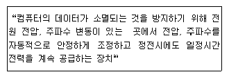
- UPS
- GPS
- VGS
- CEPS
(정답률: 83%)
78. 초고속정보통신건물 인증업무의 처리지침에 홈 네트워크 건물 인증 심사기준으로 폐쇄회로 TV 장비에 배선되는 전선의 심사기준은?
- UTP Cat 3 4P*1 이상
- UTP Cat 4 4P*1 이상
- UTP Cat 5 4P*1 이상
- UTP Cat 5e 4P*1 이상
(정답률: 75%)
79. 공동시청 안테나 시설의 설비구성 중 단독주택의 설비에 해당되지 않는 것은?
- 안테나
- 분배(분기)기
- 혼합기
- 직렬단자
(정답률: 60%)
80. 공동시청 안테나 시설의 신호처리기(증폭기)의 요구사항이 아닌 것은?
- VHF(Low, High) 및 UHF 대역을 분리 증폭한 후 각각 출력할 것
- 전파의 불요복사가 없을 것
- 전파전압의 변동에 대해서도 안정적인 일정출력을 얻어질 수 있을 것
- 혼신이나 혼변조 등이 일어나지 않고 저잡음일 것
(정답률: 51%)
5과목: 전자계산기 일반 및 방송설비기준
81. 다음 중 다음에 실행할 명령의 주소를 기억하여 제어 장치가 올바른 순서로 프로그램을 수행하도 록 하는 정보를 제공하는 레지스터는?
- 명령 레지스터(IR)
- 프로그램 계수기(PC)
- 기억장치 주소 레지스터(MAR)
- 기억장치 버퍼 레지스터(MBR)
(정답률: 69%)
82. 기억된 내용의 일부를 이용하여 기억되어 있는 데이터에 직접 접근하여 정보를 읽어내는 장치는?
- 가상기억장치(Virtual Memory)
- 연관기억장치(Associative Memory)
- 캐시메모리(Cache Memory)
- 보조기억장치(Auxiliary Memory)
(정답률: 54%)
83. 다음 중 16진수 (2C8.3B)16를 2진수로 올바르게 변환한 것은?
- (1110111001.11001010)2
- (1110111101.11101001)2
- (1011010110.01101010)2
- (1011001000.00111011)2
(정답률: 62%)
84. 다음 중 자료의 병렬전송을 직렬전송으로 변경하는 레지스터는?
- 명령 레지스터(IR)
- 메모리 주소 레지스터(MAR)
- 메모리 버퍼 레지스터(MBR)
- 쉬프트 레지스터(Shift Register)
(정답률: 84%)
85. 다음 중 문자의 표시와 관계없는 코드는?
- BCD 코드
- ASCII 코드
- EBCDIC 코드
- Gray 코드
(정답률: 78%)
86. 서브루틴 호출 및 인터럽트 처리시 복귀 번지를 저장하는 것은?
- Stack
- Queue
- Deque
- Linked List
(정답률: 75%)
87. 디스크 스케줄링 중 현재 헤드의 위치에서 가장 가까운 요구를 먼저 서비스하는 것은?
- FCFS(First Come First Service)
- SSTR(Shortest Seek Time First)
- SCAN
- C-SCAN(Circular SCAN)
(정답률: 64%)
88. 원시프로그램(source program)을 컴파일하여 얻어지는 프로그램은?
- 실행 프로그램
- 목적 프로그램
- 유틸리티 프로그램
- 시스템 프로그램
(정답률: 70%)
89. 다음 중 SRAM의 특징이 아닌 것은?
- 전원이 공급되면 항상 저장한 내용을 기억한다.
- 제어가 간단하고 고속으로 동작하므로 소용량의 기억장치구성에 적합하다.
- 플립플롭이나 Latch 등의 회로가 포함되어 있다.
- Refresh 회로를 간단히 구성할 수 있다.
(정답률: 65%)
90. 프로그램이 수행되는 도중에 인터럽트가 발생되면 현재 사이클의 일을 끝내고 프로그램이 수행할 수 있도록 현재 상태를 보관하는 장소의 위치와 관계 있는 것은?
- 상태 레지스터
- 프로그램 레지스터
- 스택 포인터
- 인덱스 레지스터
(정답률: 62%)
91. 88[MHz] 내지 108[MHz]의 주파수의 전파를 이용하여 음성을 보내는 방송은?
- 중파 방송
- 단파 방송
- 초단파 방송
- 극초단파 방송
(정답률: 66%)
92. 방송통신위원회의 전파자원을 확보하기 위한 시책과 관계 없는 것은?
- 새로운 주파수의 이용 기술 개발
- 무선종사자 관리
- 이용중인 주파수의 이용효율 향상
- 국가간 전파의 혼신을 없애고 방지하기 위한 협의ㆍ조정
(정답률: 74%)
93. 방송국의 허가를 받은 자는 방송국 운용개시 후 몇 월 이내에 방송구역 전계강도 실측자료를 방송통신위원회에게 제출하여야 하는가?
- 1월
- 2월
- 3월
- 4월
(정답률: 84%)
94. 종합유선방송국설비에서 주파수변조방식에 의해 광케이블로 전송하는 경우 분계점은?
- 진폭변조기와 동축케이블의 최초 접속점
- 주파수변조기와 무선송신기의 최초 접속점
- 주파수변조기와 광송신기의 최초 접속점
- 텔레비전 인코더와 광송신기의 최초 접속점
(정답률: 74%)
95. 유선방송신호를 전송하는데 필요한 전송선로설비 중에서 입력신호 에너지를 2개 이상으로 균등하게 분배하는 장치는?
- 증폭기
- 보호기
- 분배기
- 분기기
(정답률: 77%)
96. 방송관련용어 설명 중 틀린 것은?
- 텔레비전 음성다중방송 : 음성신호채널을 2개로 하여 방송하는 방식의 텔레비전방송
- 텔레비전 문자다중방송 : 텔레비전방송의 전파에 문자 또는 도형 등을 중첩하여 보내는 방송
- 스테레오포닉방송 : 청취자에게 음성 기타 음향의 입체감을 주기 위하여 1개의 방송국에서 좌측신호 및 우선신호를 1개의 주파수의 전파로 동시에 전송하는 방식
- 모노포닉방송 : 음성 기타 음향신호만으로 직접 부반송파를 변조하여 행하는 방송
(정답률: 71%)
97. 다음 중 정보통신공사업자 이외의 자가 시공할 수 있는 경미한 공사의 범위에 해당되지 않는것은?
- 정보통신용 전송로 설비공사
- 연면적 1000[m2 ] 이하의 건축물의 자가유선방송설비, 구내방송설비공사
- 간이무선국, 아마추어국 및 실험국의 무선설비공사
- 인입되는 국선이 5회선 이하인 건축물의 구내통신선로 설비공사
(정답률: 66%)
98. 종합유선방송시설 중 진폭변조기의 음성 신호 특성에서 신호대 잡음비는 얼마인가?
- 30[dB] 이상
- 55[dB] 이상
- 60[dB] 이상
- 600[dB] 이상
(정답률: 54%)
99. 종합유선방송 구내전송선로설비의 보호기 특성에서 절연저항은 얼마인가?
- 1[MΩ] 이상
- 10[MΩ] 이상
- 100[MΩ] 이상
- 1000[MΩ] 이상
(정답률: 53%)
100. 다음 중 사용하는 Bit수가 다른 마이크로프로세서는?
- Z8000
- 8080
- 8008
- MC6800
(정답률: 68%)